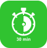

Aplicação do Super Ozonizador Digital
O Super Ozonizador RVFIT cumpre múltiplas aplicações
O Super Ozonizador foi projetado com um exclusivo sistema 2 em 1
Capaz de ozonizar ar e água. Isso lhe permite amplas possibilidades de uso, sendo ideal para sanitizar ambientes e veículos diversos.
- Sanitização de ambientes
- Purificação de ar
- Multifunções para uso domestico
- Sanitização de veículos
- Purificação de alimentos
- Areas da saúde (Ozônio medicinal)
Veja as vantagens em usar o Super Ozonizador Digital
-
Baixo consumo de energia
-
Controle digital e aviso automático
-
Não agride o meio ambiente
-

Ação em 30 minutos ou menos
-
Penetra em estofados
-
Atinge cantos difíceis
Usado e recomendado por expecialistas
Assista o Vídeo
Depoimento de quem já comprou
Faça parte você também
O que você precisa saber
Aqui você encontra as principais dúvidas sobre o Super Ozonizador Digital
-
Preciso de recarga?
Não. Não há necessidade de recarga, refil ou custos operacionais
-
Quais cuidados tomar?
Não deixe o aparelho em superficies escorregadias, afim de evitar que deslise e caia no chão.
-
Há limite de uso do produto?
Não. Oproduto não tem limite de uso e pode durar muitos anos.
-
Posso usar todos os dias?
Sim, mas não é preciso. Para a maioria dos ambientes, usar apenas 1 ou 2 vezes por semana já é sulficiente.
-
Ele elimina os causadores de doenças respiratórias como asma, rinite e outras?
Sim. Fungos e ácaros impregnados em roupas, peças de cama, sofás e etc, são eliminados, ao mesmo tempo o ar é purificado para uma respiração mais saudável.
-
Ele descontamina o ambiente com esses vírus por aí?
Sim. Basta usar equipamento conforme o manual para a eficácia na descontaminação.
-
Posso usar com pessoas ou animais no local?
Não. Animais ou pessoas podem acessar o local, mas não devem permanecer lá durante a descontaminação.
-
Quanto tempo dura o aparelho?
Não há um limite definido, pois a vida útil do Super Ozonizador Digital é similar à de uma ferramenta ou eletrodoméstico. Cuidando bem, tende a durar muitos anos.
-
Ele retira odores de alimentos, tipo peixes e crustáceos (camarão)?
Sim. O Super Ozonizador Digital tem o poder para elimininar todos os tipos de odores.
-
Pode usar o equipamento com a tv, computador ou outro aparelho no ambiente?
Sim. O ozônio não prejudica nenhum eletrodoméstico ou eletrônico.
-
Posso usar em qualquer ambiente?
Sim. Porém para maior efetividade do produto, prefira ambientes fechados com até 20 metros quadrados
-
Como usar nos ambientes fechados?
Basta abrir as portas do guarda-roupa ou armarios, fechar as portas e janelas do ambiente, ligar o aparelho no tempo desejado e sair do local.
-
Como usar para tratar água e alimentos?
O protocolo de uso é bem simples, bastanto mergulhar a pedra difusora presente no cabo de silicone em um recipiente (preferencialmente de vidro) com a água e os alimentos.
-
Como usar dentro de carros?
Conecte o adaptador do aparelho ao conector de energia do carro, configure o tempo de ozonização, saia do carro e feche as portas.